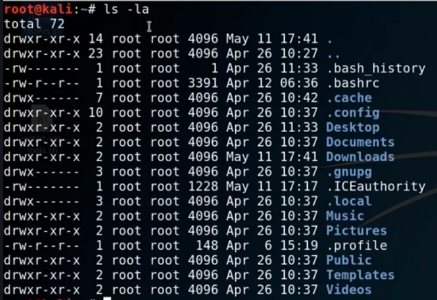

ls -l (shows user premissions on a file)

d - indicates that the entry is a directory
Permissions it separated into three categories
Owner | Group | Other
adduser [username] - creates a user
su [user] - switches to specified user
sudo (super user do) - run commands as root